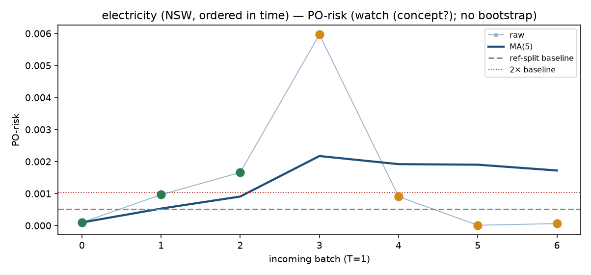
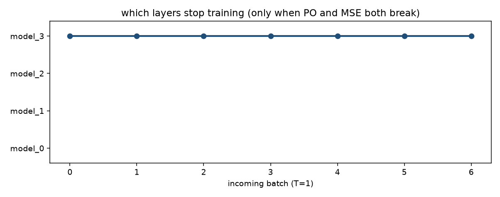

electricity (NSW, ordered in time). n_ref=10000, n_new=5000, hidden=[64, 32].
看板的输出就是：该冻结哪一层的 training（仅当 PO 和 MSE 都崩）。
MSE 崩了但 PO 正常 → 不是 concept drift，看 MMD(X)：MMD 过线是 X 在动。
PO 和 MSE 都正常，或只崩 PO → 一层都不冻。
两都崩 → 开 freeze-depth，model_i 只训 top i，其余层停训。
不做 online-bootstrap。
再观察 — 先不冻任何一层的 training


| t | PO-risk | PO MA | MSE | MSE MA | MMD(X) | MMD MA | action | 冻结哪一层的 training |
|---|---|---|---|---|---|---|---|---|
| 0 | 9.59e-05 | 9.59e-05 | 0.1188 | 0.1188 | 0.01913 | 0.01913 | keep training | 不冻任何一层的 training |
| 1 | 0.0009639 | 0.0005299 | 0.1929 | 0.1559 | 0.02747 | 0.0233 | keep training | 不冻任何一层的 training |
| 2 | 0.001658 | 0.0009058 | 0.2197 | 0.1772 | 0.121 | 0.05585 | keep training | 不冻任何一层的 training |
| 3 | 0.005966 | 0.002171 | 0.1595 | 0.1728 | 0.1282 | 0.07393 | watch (concept?) | 不冻任何一层的 training |
| 4 | 0.0009047 | 0.001918 | 0.1935 | 0.1769 | 0.1574 | 0.09063 | watch (concept?) | 不冻任何一层的 training |
| 5 | 9.407e-06 | 0.0019 | 0.2678 | 0.2067 | 0.05751 | 0.09831 | watch (concept?) | 不冻任何一层的 training |
| 6 | 6.078e-05 | 0.00172 | 0.123 | 0.1927 | 0.005695 | 0.09396 | watch (concept?) | 不冻任何一层的 training |